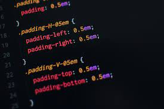
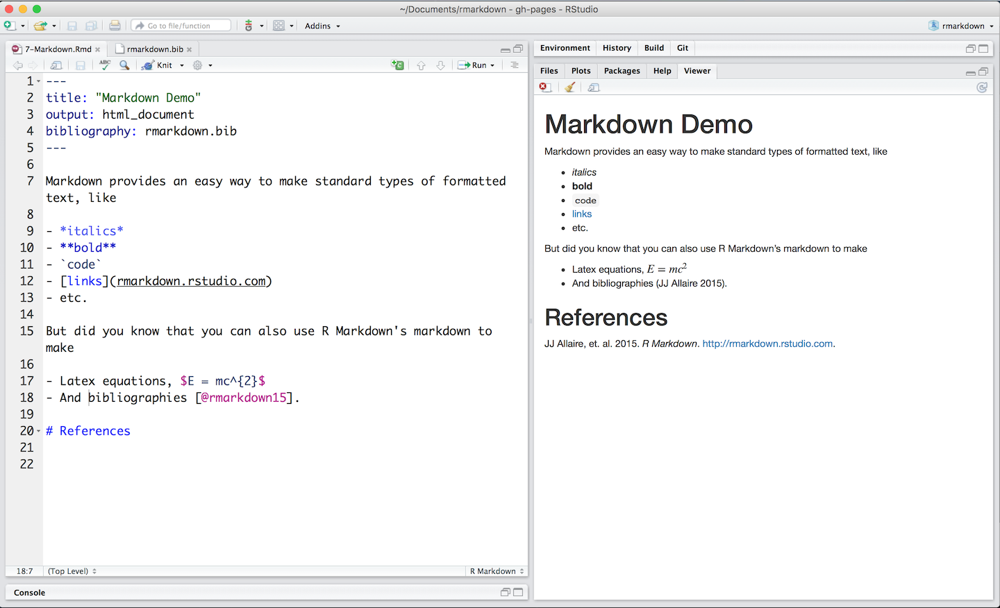

HTML, CSS, MARKDOWN
O QUE SÃO? PARA QUE SERVE?
HTML
Criada pelo britânico Tim Berners-Lee, o acrônimo HTML significa HiperText Markup Language,
traduzindo ao português: Linguagem de Marcação de Hipertexto.
Ele permite inserir o conteúdo e estabelecer a estrutura básica de um website.
Portanto, ele serve para dar significado e organizar as informações de uma página na web.
Sem isso, o navegador não saberia exibir textos como elementos ou carregar imagens e outros conteúdos.
Os hipertextos são conjuntos de elementos conectados.
Esses podem ser palavras, imagens, vídeos, documento, etc.
Quando conectados, formam uma rede de informações que permite a comunicação de dados,
organizando conhecimentos e guardando informações.

COMO FUNCIONA O HTML?
Através de um documento HTML, ou seja, um documento com a extensão .html ou .htm.,
o navegador faz a leitura do arquivo e renderiza o seu conteúdo para que o usuário final possa visualizá-lo.
Os arquivos .html podem ser visualizados em qualquer navegador (como Google Chrome, Safari, ou Mozilla
Firefox).
Cada página consiste em uma série de tags (também chamados de elementos) que podem ser considerados os
blocos de construção das páginas.
Portanto, esses blocos são a maneira com a qual o HTML faz a marcação dos conteúdos,
criando a hierarquia e a estrutura do mesmo, dividido entre seções, parágrafos, cabeçalhos, e outros.
CSS
O CSS foi desenvolvido em 1996, pelo World Wide Web Consortium, para complementar o HTML,
uma vez que este não contém tags para formatação de página,
sendo necessária a escrita da marcação para o site.
O CSS tem a tarefa de separar o conteúdo do site de sua apresentação visual,
alterando elementos como cor do texto, fonte e espaçamento entre blocos,
assim como todo o aspecto estético de uma página.

COMO FUNCIONA O CSS?
CSS se coloca como uma ferramenta relativamente simples, de fácil aprendizado,
possibilitando a criação de efeitos, profundidade, animações, páginas interativas e até jogos.
PERMITE FAZER:
- Criação de animações: proporcionam uma experiência mais atrativa ao usuário,
em comparação com páginas estáticas,
e merecem maior atenção na execução de estruturas;
-
Criação de efeitos visuais: sobrepostos, como o Parallax,
criam layouts diferenciados, com imagens que possuem profundidade,
e se tornam mais agradáveis para a experiência;
- Sites dinâmicos: outra possibilidade criada pelo CSS,
possibilitando a criação de páginas responsivas, transições,
contas personalizadas e textos ou caixas que mudam de cor conforme a navegação;
- Landings pages: páginas para captação de leads ou dados de visitantes que contam com componentes
gráficos em destaque
e formulários de preenchimento de dados. O CSS é responsável por isso.
MARKDOWN
Desenvolvido em 2004 por John Gruber e Aaron Swartz para simplificar a estruturação de um texto,
o Markdown é um sistema de formatação aberto que torna a escrita e a leitura mais simples.
Com uma codificação mínima, além de fácil,
ele é visualmente mais "limpo" e pode ser convertido facilmente para HTML.

COMO FUNCIONA O MARKDOWN?
Basicamente, ele marca alterações nos textos (subtítulos, negrito, itálico etc)
apenas com os símbolos do teclado, sem usar teclas de atalho, menus,
selecionando o texto e sem aquele visual complexo - para os que não estão acostumados - de HTML.